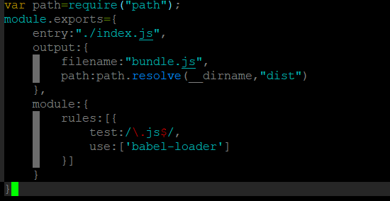

1.在Linux中安装node
1.下载对应版本的Node.js(https://nodejs.org/en/download/)
2.将下载的代码传输到Linux系统的根目录下的opt文件夹下
对下载的文件进行解压 tar -xvf node-v8.11.3-linux-x64.tar.xz
将解压后的文件移动到你想移动的位置 mv /node-v8.11.3-linux-x64.tar.xz /位置
3.配置环境变量
1）1
$ sudo vim /etc/profile
2)按i进入编辑模式
3）在末尾添加
1 | export NODE_HOME=/(node 目录) |

4.按ESC键退出编辑模式，:wq退出vim
5.重新启动你的系统
6.测试(在任何目录都可以)1
2$ node --version
$ npm -version

7.Node.js安装完成
2.搭建环境并且创建一个项目
1.在该项目下进行初始化
$ npm init
使用-y参数创建默认package.json文件
$ npm init -y
2.使用模块化方式编写代码
例：user.js1
2
3
4
5
6
7
8
9
10
11
12
13
14
15 var msg = "hello world"
var obj = {
name:'terry',
sayName:function(){
console.log(this.name);
}
}
//向外部暴露接口
module.exports = obj;
```
对应的index.js
```javascript
//加载模块，实际上加载模块module.exports
var obj = require('./user.js');
obj.sayName();
3.第三方模块的调用,下载到当前目录，供当前目录使用1
2$ npm install jquery --save
$ npm install qs --save
3.转换
1.babel的安装
$ npm install babel-cli –global
一般会出现权限的错误，因为安装的地址不是全局的(如果没有可以忽略)
$ sudo chown -R $(whoami) $(npm config get prefix)/{lib/node_modules,bin,share}
2.安装bebel-preset-latest
$ npm install babel-preset-latest –save-dev
3.配置环境
$ vim .babelrc
进入后按i键进入编辑模式1
2
3{
"presets":["latest"]
}
4.转换
$ babel 1-hello.js -o 1-hello-es5.js
4.打包
1.安装打包器 webpack
$ npm ibstall webpack webpack-cli –save-dev
2.添加配置文件 webpack.config.js

3.为package.json添加脚本
4.执行打包
$ npm run 脚本名称
5.安装babel-core babel-loader
6.安装预设 npm install babel-preset-latest –save-dev
配置babel的配置文件 .babelrc
7.在webpack中集成